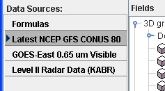
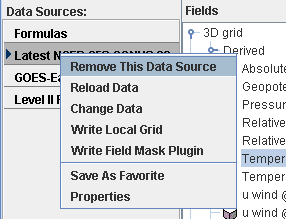
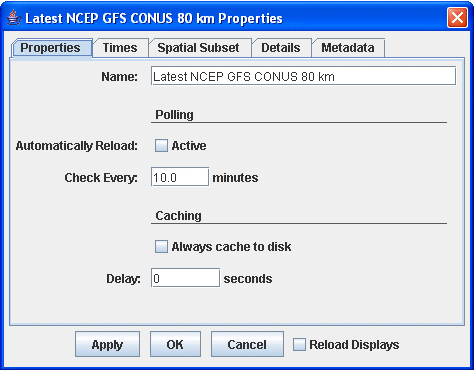
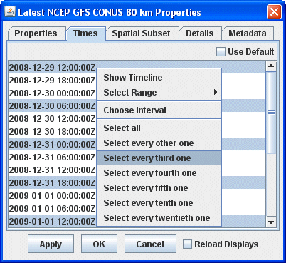
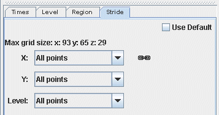
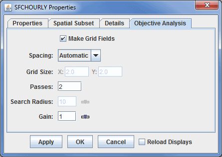

Data Sources
The Data Sources panel lists the data sources currently loaded into McIDAS-V and provides access to both the user-made and native formulas. The data sources listed are chosen as described in the Data Sources page. The selected item is the data source that lists out its fields in this tab:

Image 1: Data Sources Panel
To set the defaults for a data source bring up the Properties dialog by right-clicking (or double-clicking) on the data source name in the Data Sources panel of the Field Selector tab and select Properties (note that the items in this menu will differ dependent on the data source type):

Image 2: Data Sources Panel Properties
Properties
- Remove This Data Source - Removes the data source from the McIDAS-V Session.
- Reload Data - Reloads the data. This allows for data to be updated to a more recent time without having to go back to the Data Sources tab to reload it.
- Change Data - Opens a 'Change data for:' window. This window looks almost exactly like the Data Explorer and works the same. This selects a new data source to load in and replace the existing one.
- Write Local Grid - Saves the data as a grid as a netCDF file (*.nc). This opens a window where a user can select what fields in the selected data source will be written to the grid. In the Save dialog, there is an option for 'Change data source'. When this is selected, the data source in the Field Selector will change to only list the fields that were written out to the local grid.
- Write Field Mask Plugin - Saves the data source as a Jar file (*.jar). This opens a 'Data Source Field Mask File' window, where a user can select what parameters to show, hide, or write to a plugin.
- Make Data Source Local - Generates McIDAS AREA files form an imagery data source. The only calibrations that can be written to the AREA are those that have been previously displayed in the session. When selecting the directory to write the AREA file to, there is a text field for Prefix. By default, this will be populated with text about the data source (for example: GE-IR-GOES-East10.7umIR). Regardless of how this field is set, the output file will be appended with information about the band number and position. For example, a default output file may be named GE-IR-GOES-East10.7umIR_Band4_Unit_Pos0.area.
- Save As Favorite - Saves the selected data source as off as a *.xidv bundle in your /User/McIDAS-V/datasources directory. This file can be loaded in as a bundle, and the data source will be added.
- Properties - Opens the data source's Properties window.
The Properties window is different for different types of data sources. Below is the Properties window for a gridded data source:

Image 3: Properties Tab of the Data Sources Properties Window
Properties
- Name - Sets the name of the field to poll. This is how the item will list in the Data Sources panel of the Field Selector. This is also the text of the %datasourcename% macro once the data is displayed.
- Automatically Reload - Reloads the data from the data source automatically when the Active checkbox is checked.
- Check Every - Sets how often McIDAS-V will check to see if the data source has been updated.
- Reload Displays - Reloads the display once Apply or OK is selected.
For point data you can define Time Binning settings (not shown) by selecting a Bin Size (e.g., 5 minutes, 1 hour) and a Round To value (e.g., On the hour, 15 minutes after the hour). This will map all the observation times into the nearest bin. The smallest time is rounded with the Round To value (e.g., if Round To was "10 after" and the smallest time was 10:23 then this time would be rounded to 10:20). This is the base time. Each actual observation time is mapped into a set of bins of Bin Size starting at the base time. Note that with certain point netCDF files where each data point has its own timestep, time binning may be necessary in order to create gridded displays.
The Times tab allows you to select the times to use. Change the dropdown menu from Use Default to Use Selected to select individual times. If Use Selected was chosen, right click in the list to show a menu that allows for selecting different subsets (e.g., every 3rd time).

Image 4: Times Tab of the Data Sources Properties Window
For grids and other data source types, the data can be subsetted and decimated with the Spatial Subset tab. The X Stride, Y Stride and Level Stride lists allows for decimating a grid, selecting every Nth point. The Bounding Box allows for defining a spatial area to load. The default spatial domain of
the data is shown by the blue outline box. To select an area, left click and drag on the map. Alternatively, enter in Lat/Lon values in the fields to the left of the map and press Enter. Once a subset is selected it can be resized (grab on the little black selection points) moved (grab somewhere near the box) and delete (press the Delete key).
Subsetting can be useful when displaying an image that has a high resolution or covers a large spatial area as a Contour Plan View or Color-Filled Contour Plan View display. Instead of having McIDAS-V take the time to compute values between every point, a user can set a stride where only every Nth point will be taken into consideration. If a very detailed image is needed, it is recommended that stride is kept at the default (none). However, if a user is looking to get a general picture, the stride feature can be a time-saver.
 Image 5: Spatial Subset Tab of the Data Sources Properties Window
Image 5: Spatial Subset Tab of the Data Sources Properties WindowA version of this spatial subsetting window is used in the Field Selector tab of the Data Explorer. Here, a user explicitly enables these settings. The decimation and spatial subset are shown in different tabs:

Image 6: Subset Panels in the Field Selector
The Details tab shows further information about the data source, e.g.: any documentation associated with the data, what files or URLs are used, etc.
For grid data sources the Metadata tab shows the NetCDF metadata information.
The Objective Analysis tab is available if working with Point Data.

Image 7: Objective Analysis Tab of the Data Sources Properties Window
Properties
- Make Grid Fields - Allows point data to be plotted in as a grid display. If this option is unchecked, then the Gridded Fields and Gridded Fields (with first guess) will not be available in the Fields panel of the Field Selector. Also, if this option is not selected, any other items in this display will have no effect on the final display. This option is checked on by default.
- Spacing - Determines the grid spacing method.
- Automatic - Calculates grid spacing from observation density.
- Degrees - Uses a specific lat/lon spacing fro the grid spacing.
- # Points - Sets the number of grid points in the x and y direction.
- Grid Size - Sets the X and Y spacing in spacing units. This is an option if Degrees or # Points is selected for Spacing.
- Passes - Sets the number of passes for the Barnes analysis to do. Four passes are recommended for analyzing fields where derivative estimates are important (Ref: Barnes 1994b), three passes recommended for all other fields (with gain set to 1.0) (Ref: Barnes 1994c "Two pass Barnes Objective Analysis schemes now in use probably should be replaced by appropriately tuned 3pass or 4pass schemes"), and two passes are only recommended for "quick look" type analyses.
- Search Radius - Sets the search radius (in grid units) for the weighting of points in determining the value at a specific grid point. This should be in the range 0.2 to 1.0. Data are fitted more closely with a gain of 0.2 (at the expense of less overall accuracy over the entire grid), larger values smooth more.
- Gain - Represents the factor by which scaleLength is reduced for the second pass. This should be in the range 0.2 to 1.0. Data are fitted more closely with a gain of 0.2 (at the expense of less overall accuracy over the entire grid), larger values smooth more. Suggested default: 1.0. Set the gain for each pass after the first.
A user can create their own formulas using the McIDAS-V Formulas facility. The Formulas data source in the Field Selector is a special data source and lists all of the available end user formulas. Right-click on the data source to create new formulas and import and export formulas. The formulas are listed in the Fields tree. Right-clicking on one of the formulas listed in the Fields tree allows for editing, copying or evaluating the formula. This menu also provides access to the Jython Library and Jython Shell.
A user can select a formula just like any other Field and create a display from it. However, the formula, when evaluated to create the display, usually needs one or more other data fields to act on. In this case a special Field Selector window appears that allows the user to select the fields for the formula. (Note: The Fields selected here can also be Formula Fields resulting in further Field selection).